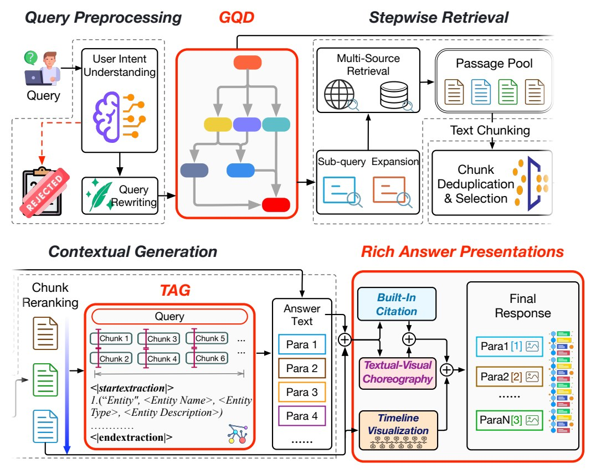

GraTAG: Production AI Search via Graph-Based Query Decomposition and Triplet Aligned Generation with Rich Multimodal Representations
KDD 2026ACM SIGKDD Conference on Knowledge Discovery and Data Mining* = Co-first authors

In brief
GraTAG is a production AI search engine built on graph-based query decomposition and triplet-aligned generation, deployed as Xinyu at Xinhua News Agency. It tackles three pain points of AI search — imprecise retrieval on complex queries, logic lost to chunking, and flat text-only answers. Complex queries are broken into a dependency graph of atomic sub-queries for precise, stepwise retrieval; answer generation is aligned with relation triplets extracted from the retrieved evidence, restoring the logic that chunking breaks; and answers ship with timelines, built-in citations, and matched images. Across 1,000 real-world queries and over 243,000 expert ratings, GraTAG outperforms eight existing systems, and the industry-grade full-stack implementation is publicly released.
Key takeaways
- Graph-based query decomposition (GQD) maps a complex query onto a directed acyclic graph of atomic sub-queries — terminal, chain, or split decompositions — enabling precise, stepwise retrieval with less noise.
- The GQD model is trained in two stages: supervised fine-tuning on expert-curated decompositions, then GRPO (Group Relative Policy Optimization) reinforcement learning whose reward is the pipeline's likelihood of producing the ground-truth answer.
- Triplet-aligned generation (TAG) extracts relation triplets from retrieved chunks and injects them during generation, restoring cross-chunk logic broken by chunking; in ablations, removing TAG hurts factuality, insightfulness, and numerical precision most.
- Rich answer presentation: timelines double the event coverage of the CHRONOS timeline baseline in half the generation time (33.3 s vs. 67.4 s), and 80% of answers include images at 90% contextual precision (vs. 3% for the Metaso search engine).
- Rated best of nine systems in a human evaluation of 1,000 real-world queries across nine criteria (243,000+ expert ratings): highest average score (9.235 vs. 8.810 out of 10), leading in comprehensiveness (+10.8% relative) and insightfulness (+7.9%).
- On the public BrowseComp browsing benchmark, GraTAG reaches 30.57% accuracy versus 26.07% for the strongest baseline — a 17.3% relative improvement.
- Deployed commercially as Xinyu at Xinhua News Agency and China Telecom; a 14-day A/B test more than doubled active users' daily Q&A count (2.73 to 5.56). End-to-end latency is 14.2 s — on par with Perplexity, above lighter systems, and reduced further in production by caching.
Abstract
Generative AI search engines offer a key advantage over traditional search engines through their ability to synthesize fragmented information for queries, yet they still require improvements in relevance, comprehensiveness, and presentation. To these ends, we introduce GraTAG, an AI Search framework that addresses these challenges through three core innovations. First, we introduce graph-based query decomposition (GQD) to dynamically break down complex or ambiguous queries into structured sub-queries with explicit dependencies, enabling more precise, stepwise retrieval. Second, we propose triplet-aligned generation (TAG), which dynamically constructs relation triplets from retrieved documents to explicitly model entity relationships, factual dependencies, and logical connections, enabling the model to generate more coherent and comprehensive answers. Third, GraTAG innovates in rich multimodal presentations that integrates timeline visualization and textual-visual choreography to reduce cognitive load and enhance information verification. Evaluated on recent real-world queries, GraTAG outperforms eight existing systems in human expert assessments, excelling in relevance, comprehensiveness, and insightfulness. Our work publicly releases a comprehensive, industry-grade full-stack AI search engine, providing a solid reference for the community and demonstrating the effectiveness of the proposed system through rigorous evaluations and ablation studies.
BibTeX
@inproceedings{gratag,
title = {{GraTAG}: Production {AI} Search via {Graph-Based} Query Decomposition and Triplet Aligned Generation with Rich Multimodal Representations},
author = {Tang, Bo and Zhu, Junyi and Li, Ang and Wu, Yiquan and Kuang, Kun and Jin, Beihong and Wu, Jiahao and Wang, Hao and Xi, Chenyang and Feng, Yuchen and Wei, Wenqiang and Li, Chunyu and Lin, Zehao and Li, Zhiyu and Xiong, Feiyu and Li, Beibei and Wei, Kaiwen and Chen, Jingrun},
year = {2026},
booktitle = {Proceedings of the 32nd ACM SIGKDD Conference on Knowledge Discovery and Data Mining V.2},
pages = {8041--8052},
doi = {10.1145/3770855.3818426},
url = {https://doi.org/10.1145/3770855.3818426},
}